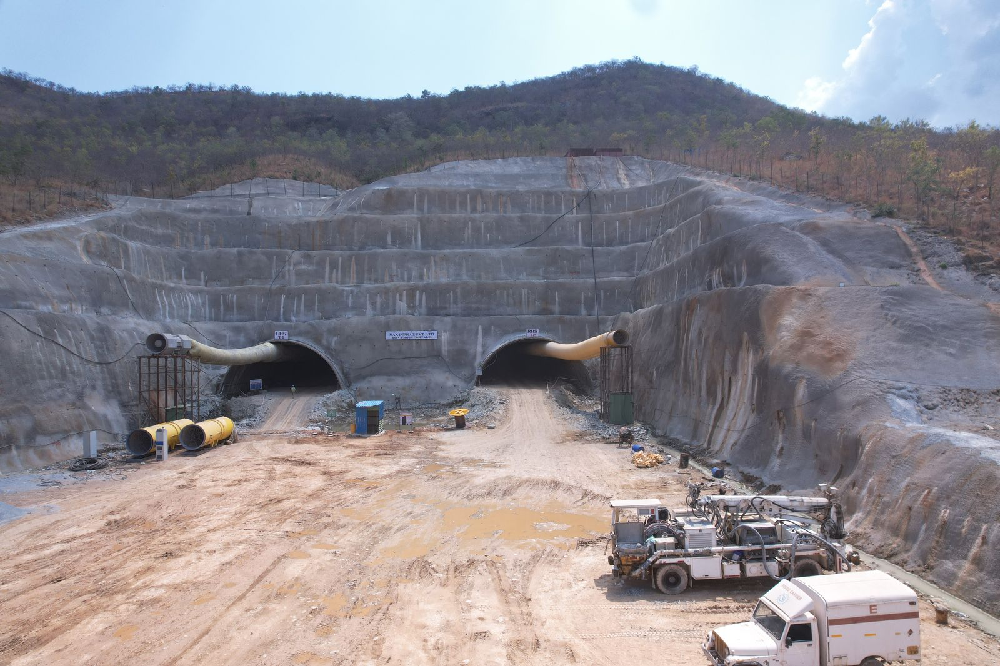
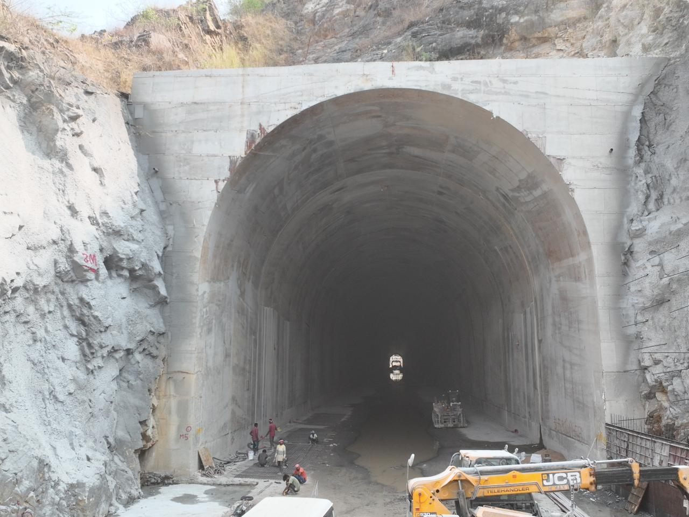
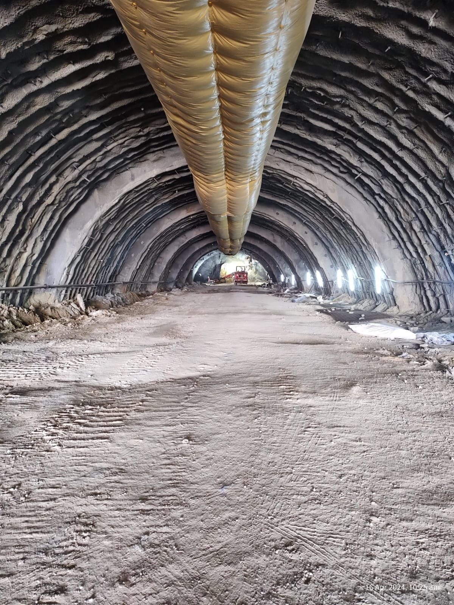
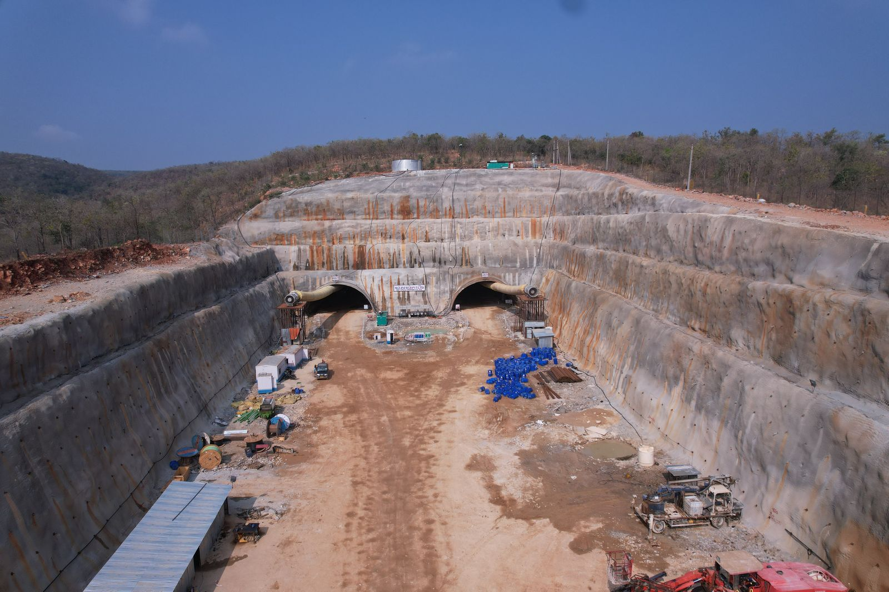
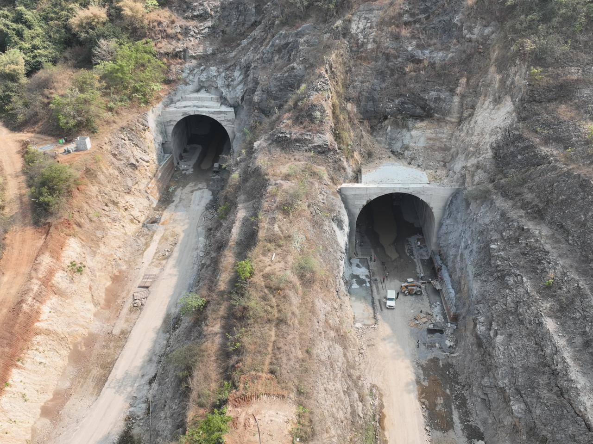
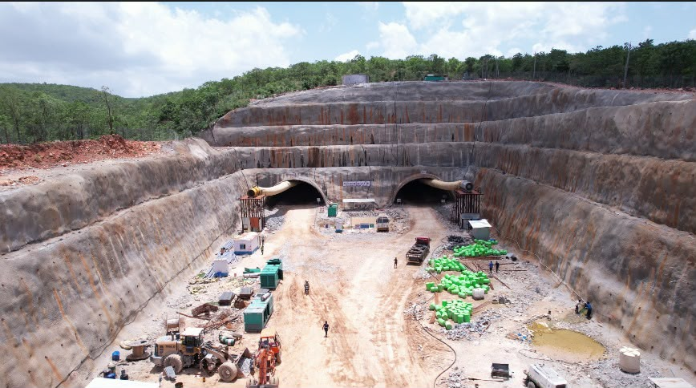

Mana Infrastructure has extensive experience in tunnel construction using the New Austrian Tunnelling Method (NATM), delivering complex underground infrastructure for NHAI highway projects, irrigation initiatives, and RVNL railway tunnels. Our portfolio includes the Polavaram Irrigation Project — one of India's most significant — where we execute tunnel excavation, shotcrete lining, rock bolting, and waterproofing under demanding geological conditions.
We are also executing 6-lane twin highway tunnels for NHAI spanning approximately 3.68 km, utilizing NATM techniques with stringent safety measures, continuous geotechnical monitoring, and strict quality standards. With a strong focus on innovation, safety, and engineering excellence, Mana Infrastructure continues to deliver world-class tunnelling solutions for transportation, railway, and irrigation infrastructure across India.

Advanced tunnelling expertise with NATM methodology and modern support systems.
Controlled blasting and mechanical excavation following the New Austrian Tunnelling Method.
Wet and dry-mix shotcrete application with steel fibre reinforcement for immediate ground support.
Systematic rock bolting patterns with grouted anchors for tunnel stabilization.
Comprehensive membrane waterproofing systems for long-term tunnel durability.
Tunnel portal construction including slope stabilization and retaining structures.
Ventilation, lighting, fire suppression, and emergency evacuation infrastructure.
Our tunnel construction work showcasing NATM methodology in action.




Get in touch to learn more about our tunnelling capabilities and NATM expertise.
Contact Us